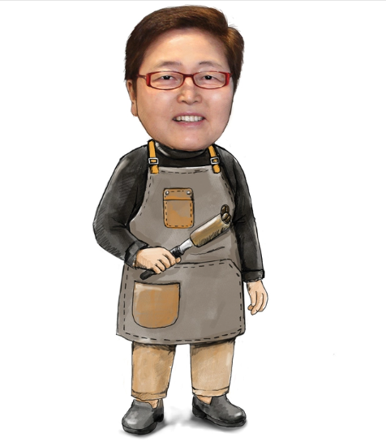

감성·과학 어우러진 커피… 한 잔의 행복 선사할 것
$1

SPC, 웅진푸드, 이랜드 등의 기업 자문을 거쳐 독일 황실커피 '달마이어' 수입 납품, 바리스타 대회 아시아 최초 심사위원 등을 역임한 이송글로벌 대표입니다.
"탄소를 억제하고, 산을 분해하면서도 커피의 향은 살리는 건강한 커피를 만드는 것을 커피 제조 철학으로 두고 있습니다."
1997년 금속 무역 사업을 시작으로 어머니의 권유로 커피 비즈니스에 뛰어든 뒤, 프랑스·미국 유학 시절 연구를 거쳐 커피학(Coffeeology)에 깊이 매진했습니다.
세계스페셜티커피협회 바리스타 대회 아시아 최초 심사위원, 한국 Chapter 창립 등을 통해 한국 커피 문화의 기반을 마련했습니다.
"커피는 3천 가지 이상의 향을 지니며, 어떤 향을 끌어내 특징을 살릴지, 마지막 한 방울까지 고객이 아쉬워할 커피를 만들지 고민합니다."
- 건강한 커피: 슬로우 로스팅으로 유해 성분 최소화
- 일관된 품질: 생두 선별부터 센서리 테스트까지
한 잔의 커피가 전하는 행복을 위해, 이송글로벌은 오늘도 과학과 감성을 조화시킵니다.